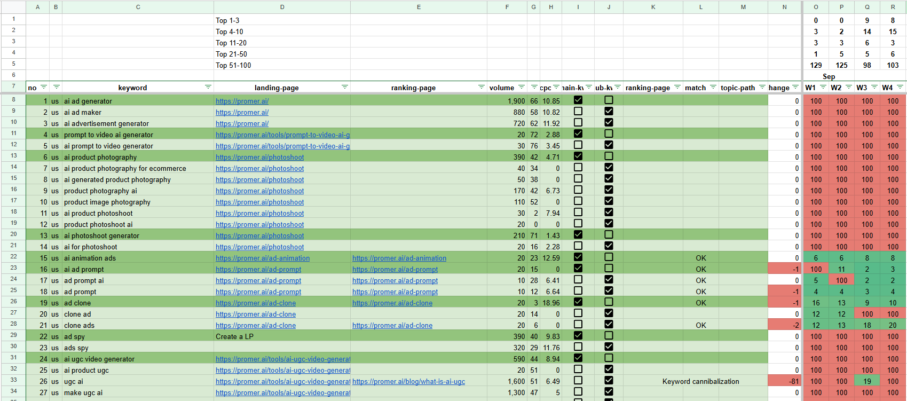
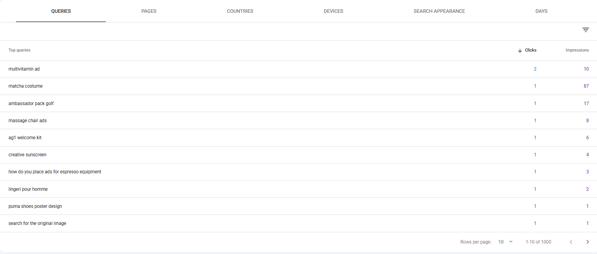
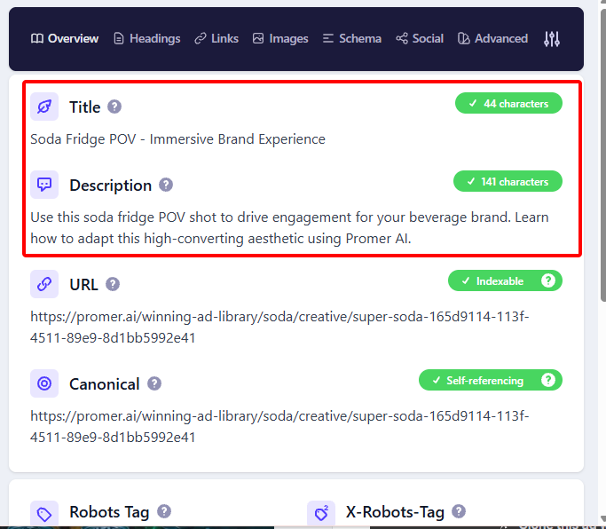

Promer
Báo cáo tuần
SEO & AI Search
Tăng từ đâu, việc nào nên làm tiếp, chỗ nào chưa ra kết quả kinh doanh.
15–21/11/2026 so với 8–14/11/2026 · bối cảnh 13 tuần
Hiện trạng
Traffic tăng mạnh, paid vẫn bằng 0
Impressions
Google Search Console
▲ Tăng ở photography và Black Friday
▼ holo giảm impressions nhưng click giữ
Click
Google Search Console
▲ Blog chiếm 79% phần tăng
▲ Photography + fashion: +135 click
Session
GA4 · tham khảo
● Google organic 979 → 1,269, cùng chiều GSC
click-to-webapp
session có event
▲ Organic: +34 từ traffic, +12 từ tỷ lệ bấm
▼ AI giảm 3 session
Sign-up
người, Google + email
▲ Organic +7
● AI giữ 15
Paid
nâng gói + mua credit
▼ Tuần trước 1 người nâng gói, tuần này 0
Traffic tính bằng click Google. GA4 chỉ dùng để đối chiếu và tính tỷ lệ. Đã loại /lp/ và source affiliate.
Promer · SEO & AI Search tuần 15–21/11/2026 · bản review · 3
Đang ở đâu
Click Google gấp đôi 23/8, blog chiếm 71%
GSC clicks mỗi tuần · tím = blog
Tuần 15–21/11
Cách đọc: mỗi cột là một tuần Chủ nhật–thứ Bảy, phần tím là click vào blog.
Promer · SEO & AI Search tuần 15–21/11/2026 · bản review · 2
Vì sao click tăng 36%
Nhờ tối ưu photography và fashion ngày 13/11
+265 click đến từ đâu
Hai bài chiếm 51% phần tăng toàn site
Nước tăng nhiều nhất
Việc tiếp theo
Blog tăng 492 → 702 (+210), bằng 79% của +265 click toàn site. Riêng photography và fashion +135 click.
Promer · SEO & AI Search tuần 15–21/11/2026 · bản review · 4
Team đã tối ưu gì
Ba bài prompt được tối ưu toàn bộ, không chỉ thêm CTA
Ba bài prompt đã tối ưu
Cách đọc: các bài được tối ưu nhiều phần cùng lúc, nên số tăng chỉ ghi là trùng thời điểm tối ưu, chưa tách được phần nào đóng góp bao nhiêu.
Promer · SEO & AI Search tuần 15–21/11/2026 · bản review · 5
GA4 có khớp GSC không
GA4 cũng tăng chủ yếu ở photography và fashion
GSC và GA4 cùng tăng
Kết quả
Các trang tăng mạnh nhất trong GA4
GA4 chỉ dùng để đối chiếu xu hướng. Tổng session và tổng cộng theo trang có thể lệch nhẹ do cách GA4 đếm.
Promer · SEO & AI Search tuần 15–21/11/2026 · bản review · 6
Vì sao click-to-webapp tăng 42%
Nhờ thêm traffic và CTA đầu bài
click-to-webapp Organic: 110 → 156 session (+46)
12 lượt thêm đến từ đâu
Theo nhóm trang (session có click-to-webapp)
Cách đọc: lượt bấm CTA và banner đếm phía app bằng UTM. Tỷ lệ bấm = session có click-to-webapp chia session Organic.
Promer · SEO & AI Search tuần 15–21/11/2026 · bản review · 7
/tools/ và /winning-ad-library/
/tools/ chuyển đổi tốt nhất nhưng ít traffic
Nhóm trang nào chuyển đổi tốt
136 keyword theo dõi của trang tools
Danh sách keyword chính + phụ team đặt mục tiêu cho từng trang tools. Vị trí tuần 15–21/11 (GSC): 8 top 1–3 · 27 top 4–10 · 12 top 11–20 · 10 top 21+ · 79 chưa có impression.

Mở sheet feature-page-kws ↗Landing page cần focus: keyword đang ở vị trí 4–10
6 trang có 2,390 impressions ở vị trí 4–10 nhưng chỉ 10 click. Keyword: ad prompt (4.4), create tiktok ads with ai avatar (5.6), ai instagram ad generator (8.2), furniture ads (6.8), bakery ads (4.0), ad clone (8.0).
Kết quả
• /winning-ad-library/ giữ 91–140 click/tuần suốt 13 tuần, tỷ lệ click-to-webapp ổn định 19–21%.
Từ AI
• AI sign-up từ /tools/: 18–22/tuần (20/9–11/10) → 7.
Promer · SEO & AI Search tuần 15–21/11/2026 · bản review · 8
AI traffic tiếp tục giảm
95% phần giảm nằm ở trang creative WAL
5 tuần gần nhất
Giảm ở đâu
Từ AI tới app tuần này
Lý do team tìm ra
• Trang creative lên với query không liên quan tới ads: chỉ 36% impressions có chữ ad/ads, trang niche WAL là 91%.
• Title và meta của trang creative không có chữ "ad".
Việc tiếp theo
Funnel ghi 243 session AI (số GA4 gốc). Bảng này 224 vì đã loại 4 trang có traffic bất thường: photoshoot, ad-animation, ai-ugc-video-generator và (not set). Lần kiểm tra index / AI bot gần nhất: 86% URL được index.
Promer · SEO & AI Search tuần 15–21/11/2026 · bản review · 10
Trang creative WAL
Trang creative lên với query không liên quan tới ads
Bằng chứng

GSC · query của trang /creative/: matcha costume, ambassador pack golf, lingeri pour homme…

Title và meta không có chữ "ad"
Việc tiếp theo
• Thêm internal link từ trang creative về trang niche / product type để đẩy trang ad library.
Promer · SEO & AI Search tuần 15–21/11/2026 · bản review · 11
holo-ai-review
holo giảm impressions, vị trí và click vẫn giữ
5 tuần gần nhất (GSC, lọc đúng URL)
Impressions giảm từ ngày nào
So 14 ngày
Diễn biến
• Giảm từ 15/11, trước lần tối ưu 19/11. Thấp nhất ngày 20–21/11.
• Vị trí và click không giảm.
Việc tiếp theo
Số lấy bằng GSC lọc đúng URL. Không dùng bảng theo trang vì GSC cộng impressions cao hơn.
Promer · SEO & AI Search tuần 15–21/11/2026 · bản review · 9
Traffic đã ra kết quả kinh doanh chưa
Traffic tăng nhưng chưa ra paid
Sau khi vào site
Kết quả kinh doanh tuần này
• Paid tuần này 0 (tuần trước 1 người nâng gói, từ AI).
• Organic: tỷ lệ click-to-webapp → sign-up giảm 18.6% → 13.9%.
Việc tiếp theo
Sign-up và paid trong cùng tuần không phải cùng một nhóm người, nên cần theo dõi riêng nhóm sign-up sau 20/11.
Promer · SEO & AI Search tuần 15–21/11/2026 · bản review · 12
Tóm tắt
7 insight tuần này
7 insight
Promer · SEO & AI Search tuần 15–21/11/2026 · bản review · 13
Việc tiếp theo · Blog
Tối ưu bài đang giảm và CTA trong bài
Task 1 · Tối ưu các bài đang giảm, theo cách đã làm với photography và fashion
Tối ưu: tiêu đề + meta, mở bài trả lời ngay, prompt/ví dụ có ảnh kết quả, FAQ, CTA đầu bài. Số đo: Google click/tuần, 2 tuần sau khi đăng.
Task 2 · Tối ưu CTA trong bài (CTA đầu bài: 8 → 26 lượt bấm)
Số đo: người bấm CTA/tuần, đọc ngày 03/12.
Promer · SEO & AI Search tuần 15–21/11/2026 · bản review · 14
Việc tiếp theo · Landing page và WAL
Đẩy trang top 4–10, backlink cho trang 11–20, sửa trang creative
Task 3 · Landing page (tools, ad-prompt, ad-clone, WAL niche)
Task 4 · Trang creative WAL
Theo dõi, chưa cần làm thêm
Promer · SEO & AI Search tuần 15–21/11/2026 · bản review · 15